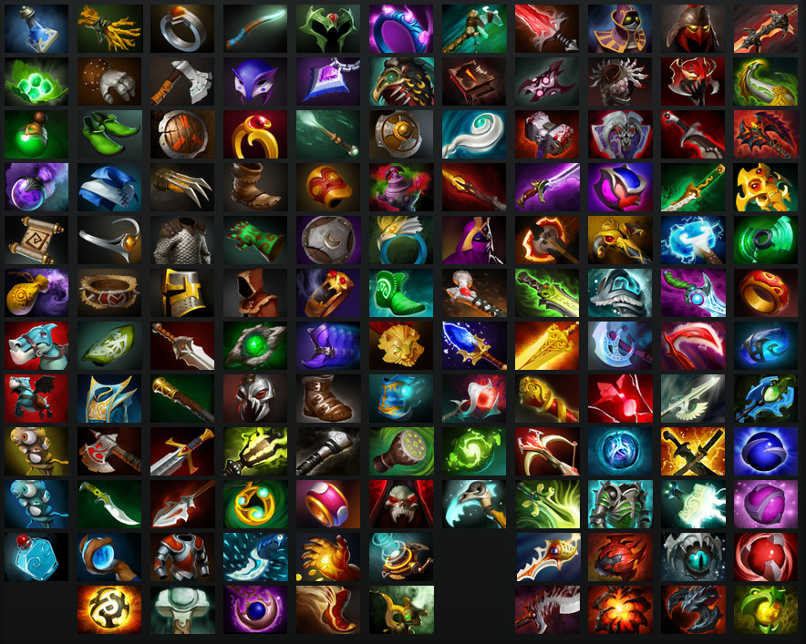

DOTO 2 MECHANICS
DOTO 2 mechanics are the inner workings of DOTO 2. There are many mechanics in DOTO 2 ranging from basic mechanics to advanced mechanics.
Last-Hitting
Last-hitting is one of the most important basic mechanics in DOTO 2.
By last-hitting you will grants XP and gold for your hero.
Last-hitting involves delivering the killing blow to enemy creeps or hero.
Nearby ally seeing your hero last-hitting will gain XP (if it's a hero that you last hit your ally will also gain gold).
Items

After you gain gold from last-hitting, you can use the gold to buy items from the shop.
Items will increases your hero power automaticly or manually.
The items you buy will be in your hero Inventory after you buy it.
Inventory will only contain a maximum of six items.
Three more slot will are provided but any items in it will not affect your hero.
Minimap
The minimap will give you information about what is happening in the games.
This is one of the most important mechanics that you have in DOTO 2.
By having the information to know where the enemy team located you can retreat savely before its too late or play aggresively to attack the enemy team.
So keep an eye on the minimap, don't focus so much on last-hitting that you forget to check the minimap.
Roles

In this game, the player will play a hero to fulfill the role that exist in this game.
There are 5 roles that exist in this game which are,
1. Safe Lane (This role usually filled with hero with weak early game power but strong at late game. The player that taking this role is expected to makes his/her team win (A. K. A. Carrying his/her team))
2. Mid Lane (This role usually filled with hero with strong at mid game but not as strong as Safe Lane at late game. The player that taking this role is expected to help his/her teammates (roaming) while defending the mid lane)
3. Off Lane (This role usually filled with hero that can initiate a war or tanking their team. The player that taking this role is expected to tanking his/her team, initiate a war properly, and surviving at early game)
4. Soft Support (This role usually filled with hero that can disabling enemy or supporting ally. The player that taking this role is expected to help his/her teammates (roaming) and help Hard Support supporting his/her team)
5. Hard Support (This role usually filled with hero that can disabling enemy or supporting ally. The player that taking this role is expected to protect the Safe Lane at early game, help his/her teammates when in needed, and control the map vision)
In game, a Safe Lane and Hard Support usually will meet an Off Lane and Soft Support.
Meanwhile the Mid Lane usually will meet the Mid Lane.
There is a strategy where the Safe Lane are being supported by two support, Soft Support and Hard Support.
Sometimes Safe Lane switched places with Off Lane but it depends of the Safe Lane situation.
You do not have to follow these roles because DOTO 2 is a strategy game, it's free for you players to express your strategy to win the game.